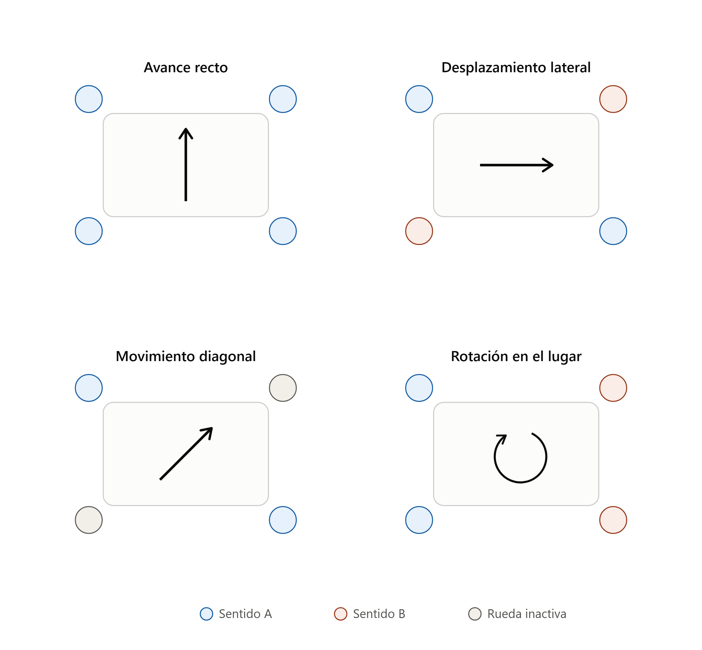
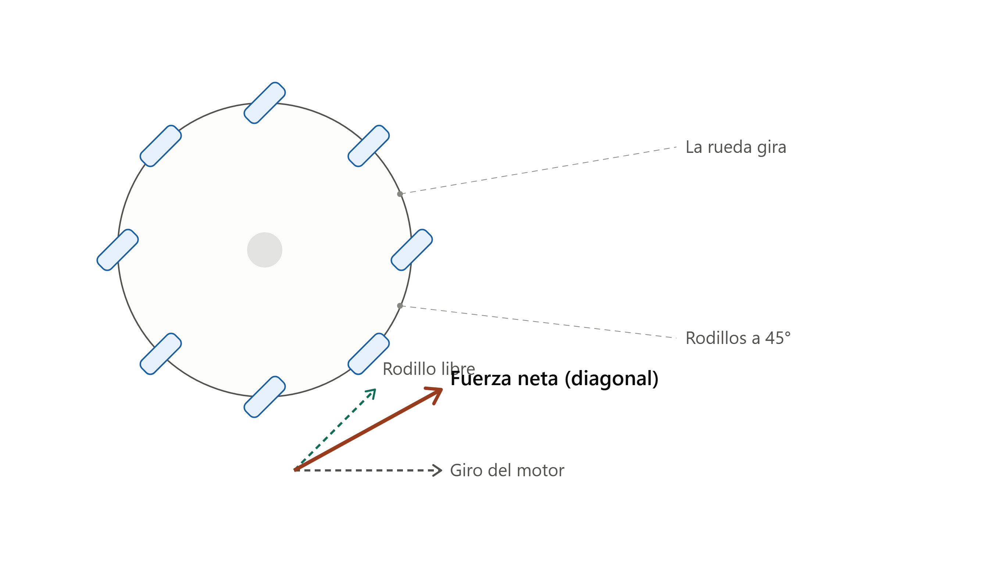

¿Qué problema resuelve o qué te dio ganas de hacerlo?
La idea de Robot Omni es aprender sobre cinemática de ruedas mecanum y control BLE de múltiples motores en simultáneo: a diferencia de Steamy I, que se mueve como un auto, este robot puede desplazarse hacia los costados o en diagonal sin girar.
¿Cómo funciona?
El Arduino levanta un servicio Bluetooth Low Energy (BLE) propio, con un UUID de servicio y uno de característica. Desde una app te conectás a esa característica y le mandás un byte de comando: los valores del 0 al 10 controlan el movimiento (detener, avanzar, retroceder, desplazarse hacia los costados, ir en diagonal o girar en el lugar) y cualquier valor de 11 en adelante se toma como la velocidad a aplicar a los 4 motores. Un shield controlador de motores (basado en la librería AFMotor, adaptada para Arduino UNO R4) maneja de forma independiente cada una de las 4 ruedas mecanum, que es lo que permite el movimiento omnidireccional.
¿Qué usaste para construirlo?
| Material / herramienta | Cantidad | Nota |
|---|---|---|
| Arduino UNO R4 WiFi | 1 | Necesario para BLE nativo (librería ArduinoBLE) |
| Shield controlador de motores | 1 | Compatible con la librería AFMotor (a confirmar el modelo exacto) |
| Motores DC con caja reductora | 4 | Uno por rueda |
| Ruedas mecanum | 4 | 2 "izquierdas" + 2 "derechas" (rodillos a 45° en sentidos opuestos) |
| Base o "chasis" | 1 | Estructura del robot |
| Powerbanks | 2 | Alimentación del circuito |
| Cables Jumpers | — |
Fotos, diagramas o capturas


Cómo replicarlo, paso a paso
-
Conseguí los materiales y revisá el pinout
Juntá lo de la lista de materiales de arriba. Antes de conectar nada, revisá el pinout de tu Arduino para verificar que los pines que vas a usar no estén ocupados por otro proceso — así evitás dañar el microcontrolador o encontrar problemas sin saber bien qué los causa.
-
Armá el chasis y montá las ruedas mecanum
Prestá atención a la orientación de los rodillos: dos ruedas van "espejadas" respecto a las otras dos. Si las montás todas iguales, el robot no va a poder desplazarse lateralmente ni en diagonal, solo hacia adelante y atrás.
-
Conectá los 4 motores al shield
Respetá la asignación del código: motor1 trasero izquierdo, motor2 trasero derecho, motor3 delantero derecho, motor4 delantero izquierdo. Alimentá el conjunto con las powerbanks.
-
Cargá el programa en el Arduino
Instalá las librerías
ArduinoBLEyAFMotor_R4desde el gestor de librerías del IDE de Arduino, copiá el código de la sección "Código y archivos" de abajo y subilo a la placa. -
Controlalo desde el celular
Conectate por BLE al robot (se anuncia como
Robot_Omni) y mandale un byte de comando:0parar,1adelante,2atrás,3/4lateral izquierda/derecha,5-8diagonales,9/10rotar en el lugar, y cualquier valor de11a255para ajustar la velocidad de los 4 motores.
¿Dónde está el código o los archivos del proyecto?
#include <ArduinoBLE.h>
#include "AFMotor_R4.h"
// --- Definición de los 4 Motores (Según el esquema de Cokoino) ---
AF_DCMotor motor1(1); // Trasero Izquierdo
AF_DCMotor motor2(2); // Trasero Derecho
AF_DCMotor motor3(3); // Delantero Derecho
AF_DCMotor motor4(4); // Delantero Izquierdo
// --- Identificadores UUID del Bluetooth BLE ---
const char* serviceUUID = "19B10000-E8F2-537E-4F6C-D104768A1214";
const char* charUUID = "19B10001-E8F2-537E-4F6C-D104768A1214";
BLEService robotService(serviceUUID);
BLEByteCharacteristic commandCharacteristic(charUUID, BLEWrite);
// --- Timeout de seguridad ---
unsigned long lastCmdTime = 0;
const unsigned long TIMEOUT_MS = 300;
void setup() {
Serial.begin(9600);
motor1.setSpeed(200);
motor2.setSpeed(200);
motor3.setSpeed(200);
motor4.setSpeed(200);
pararMotores();
if (!BLE.begin()) {
Serial.println("¡Error crítico al iniciar el módulo BLE!");
while (1);
}
BLE.setLocalName("Robot_Omni");
BLE.setAdvertisedService(robotService);
robotService.addCharacteristic(commandCharacteristic);
BLE.addService(robotService);
BLE.advertise();
Serial.println("Robot listo. Esperando conexión...");
}
void loop() {
BLEDevice central = BLE.central();
if (central) {
Serial.print("Controlador conectado. MAC: ");
Serial.println(central.address());
while (central.connected()) {
BLE.poll();
if (commandCharacteristic.written()) {
byte comando = commandCharacteristic.value();
Serial.print("Comando recibido: ");
Serial.println(comando);
procesarComando(comando);
}
// Se eliminó el bloque del IF que frenaba por timeout
}
Serial.println("Controlador desconectado. Frenando robot...");
pararMotores();
}
}
// ====================================================================
// PROCESAMIENTO DE ACCIONES
// ====================================================================
void procesarComando(byte cmd) {
if (cmd >= 11) {
motor1.setSpeed(cmd);
motor2.setSpeed(cmd);
motor3.setSpeed(cmd);
motor4.setSpeed(cmd);
Serial.print("Velocidad actualizada: ");
Serial.println(cmd);
return;
}
switch (cmd) {
case 0: pararMotores(); break;
case 1: moverAdelante(); break;
case 2: moverAtras(); break;
case 3: moverIzquierda(); break;
case 4: moverDerecha(); break;
case 5: diagonalAdelanteIzquierda(); break;
case 6: diagonalAdelanteDerecha(); break;
case 7: diagonalAtrasIzquierda(); break;
case 8: diagonalAtrasDerecha(); break;
case 9: rotarIzquierda(); break;
case 10: rotarDerecha(); break;
default: pararMotores(); break;
}
}
// ====================================================================
// FUNCIONES DE MOVIMIENTO
// ====================================================================
void moverAdelante() {
motor1.run(BACKWARD);
motor2.run(FORWARD);
motor3.run(BACKWARD);
motor4.run(FORWARD);
}
void moverAtras() {
motor1.run(FORWARD);
motor2.run(BACKWARD);
motor3.run(FORWARD);
motor4.run(BACKWARD);
}
void moverIzquierda() {
motor1.run(BACKWARD);
motor2.run(BACKWARD);
motor3.run(BACKWARD);
motor4.run(BACKWARD);
}
void moverDerecha() {
motor1.run(FORWARD);
motor2.run(FORWARD);
motor3.run(FORWARD);
motor4.run(FORWARD);
}
void rotarIzquierda() {
motor1.run(FORWARD);
motor2.run(FORWARD);
motor3.run(BACKWARD);
motor4.run(BACKWARD);
}
void rotarDerecha() {
motor1.run(BACKWARD);
motor2.run(BACKWARD);
motor3.run(FORWARD);
motor4.run(FORWARD);
}
void diagonalAdelanteIzquierda() {
motor1.run(BACKWARD);
motor2.run(RELEASE);
motor3.run(BACKWARD);
motor4.run(RELEASE);
}
void diagonalAdelanteDerecha() {
motor1.run(RELEASE);
motor2.run(FORWARD);
motor3.run(RELEASE);
motor4.run(FORWARD);
}
void diagonalAtrasIzquierda() {
motor1.run(RELEASE);
motor2.run(BACKWARD);
motor3.run(RELEASE);
motor4.run(BACKWARD);
}
void diagonalAtrasDerecha() {
motor1.run(FORWARD);
motor2.run(RELEASE);
motor3.run(FORWARD);
motor4.run(RELEASE);
}
void pararMotores() {
motor1.run(RELEASE);
motor2.run(RELEASE);
motor3.run(RELEASE);
motor4.run(RELEASE);
}
Desafíos y qué aprendiste
El código incluye una variable de timeout de seguridad pensada para frenar el robot si se corta la conexión BLE mientras está en movimiento, pero el bloque que la aplicaba fue quitado. Hoy, si el celular se desconecta en pleno movimiento, el robot no frena solo — reincorporar esa protección es un buen próximo desafío.